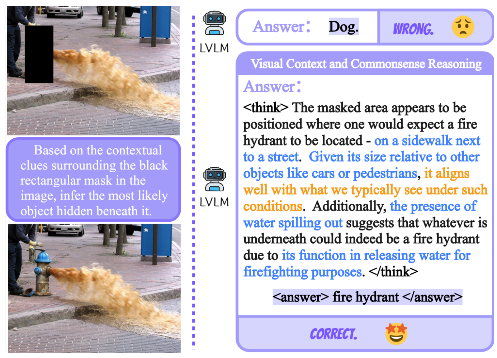
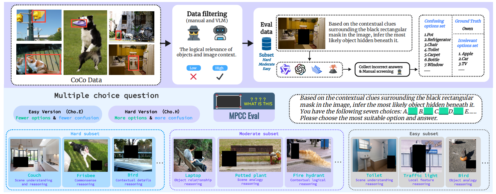
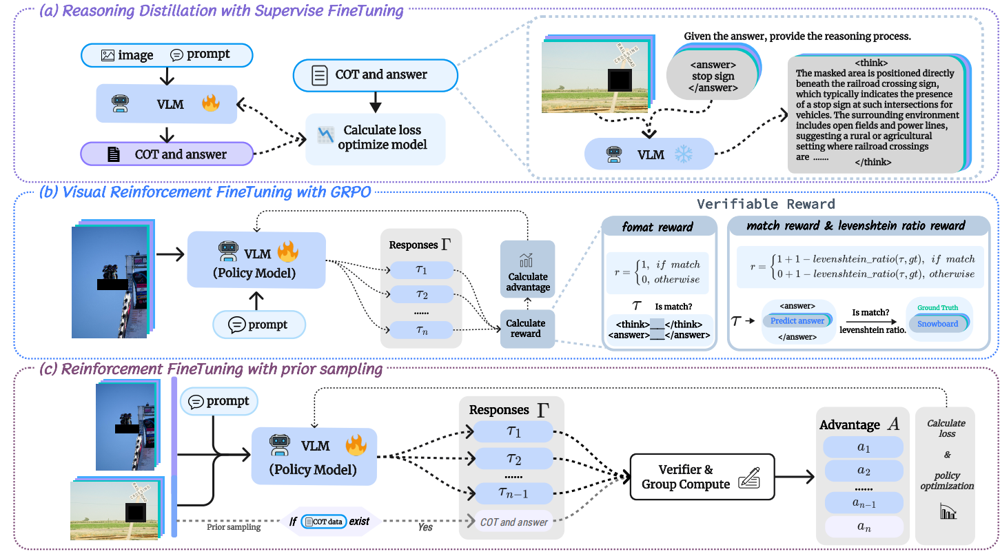

Activating Visual Context and Commonsense Reasoning through
Masked Prediction in VLMs
AAAI 2026
East China Normal University, China

TL;DR
- We propose a fine-tuning task, Masked Prediction via Context and Commonsense (MPCC), which activates visual context and commonsense reasoning through masked prediction, thereby enhancing the generalized reasoning ability of VLMs.
- We explore the impact of reasoning-guided fine-tuning strategies on the performance and generalization of VLMs. Additionally, we propose RFT with prior sampling to effectively activate reasoning.
- We contribute MPCC-Eval, a benchmark designed to assess multimodal models’ ability to perform masked prediction with context and commonsense awareness.
MPCC-Eval
The MPCC-Eval benchmark creation pipeline filters and curates images by difficulty, forming three subsets: easy, moderate, and hard. It includes two types of single-choice question formats.

Fine-tuning Strategies
Fine-tuning Strategies on MPCC Task. (a) SFT: Construct and distill reasoning data via supervised fine-tuning. (b)GRPO-based RFT: Activate reasoning with verifiable rewards. (c) Proposed RFT with Prior Sampling: Use annotated reasoning data to replace one sampling step.

ABSTRACT
Recent breakthroughs in reasoning models have markedly advanced the reasoning capabilities of large language models, particularly via training on tasks with verifiable rewards. Yet, a significant gap persists in their adaptation to real-world multimodal scenarios, most notably, vision-language tasks, due to a heavy focus on single-modal language settings. While efforts to transplant reinforcement learning techniques from NLP to Visual Language Models (VLMs) have emerged, these approaches often remain confined to perception-centric tasks or reduce images to textual summaries, failing to fully exploit visual context and commonsense knowledge, ultimately constraining the generalization of reasoning capabilities across diverse multimodal environments. To address this limitation, we introduce a novel fine-tuning task, Masked Prediction via Context and Commonsense (MPCC), which forces models to integrate visual context and commonsense reasoning by reconstructing semantically meaningful content from occluded images, thereby laying the foundation for generalized reasoning. To systematically evaluate the model’s performance in generalized reasoning, we developed a specialized evaluation benchmark, MPCC-Eval, and employed various fine-tuning strategies to guide reasoning. Among these, we introduced an innovative training method, Reinforcement Fine-Tuning with Prior Sampling, which not only enhances model performance but also improves its generalized reasoning capabilities in out-of-distribution (OOD) and cross-task scenarios. Code and data are available in the supplementary materials.
Please cite
@article{yu2025activating,
title={Activating Visual Context and Commonsense Reasoning through Masked Prediction in VLMs},
author={Yu, Jiaao and Li, Shenwei and Han, Mingjie and Yin, Yifei and Song, Wenzheng and Jia, Chenghao and Lan, Man},
journal={arXiv preprint arXiv:2510.21807},
year={2025}
}